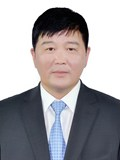

Member of the State Great Khural of Mongolia
Bolorchuluun Khayangaa
Member of the State Great Khural of Mongolia BOLORCHULUUN Khayayangaa
Mongolian People's Party
Education, graduated schools, education degree:
1982 Secondary school, Dornod province
1987 Agronomist, Mongolian State University of Agriculture
Working experience:
1987 - 1990 Officer, People’s Hural Deputies Executive authority, Dornod province
1990 - 1992 Agronomist, Bulgan sum, Dornod province
1992 - 1997 Director, “Khishig aj ahui” company
1997 - 2012 Director, “Dornod meal” Co.,Ltd
2012 - 2016 Member of the State Great Hural (Parliament) of Mongolia
2016 Member of the State Great Hural (Parliament) of Mongolia
Awards:
1998 Order of “Polar Star”
2014 Order of “Red Banner of Labour”
Foreign language knowledge:
Russian